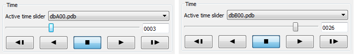

12.1. Databases¶
One main use of a visualization tool such as VisIt is to compare multiple related simulation databases. Simulations are often run over and over with a variety of different settings or physics models and this results in several versions of a simulation database that all describe essentially the same object or phenomenon. Simulations are also often run using different simulation codes and it is important for a visualization tool to compare the results from both simulations for validation purposes. You can use VisIt to open any number of databases at the same time so you can create plots from different simulation databases in the same window or in separate visualization windows that have been locked together.
12.1.1. Active database¶
VisIt can have any number of databases open simultaneously but there is still an active database that is used to create new plots. VisIt calls this the Active source. Each time you open a database, the newly opened database becomes the active source for any new plots that you decide to create. If you want to create a plot using a database that is open but is not your active source, you must make that database the active source. When a database becomes the active source, its variables are added to the menus for the various plot types. To changing the active source, select a database from the Active source combo box in the Main Window as shown in Figure 12.1.
Fig. 12.1 Changing the active source.
12.1.2. Multiple time sliders¶
When your open databases all have only a single time state, the Time slider in the Main Window is disabled. When you have one database that has multiple time states, the Time slider is enabled and can be used exclusively to change time states for the database that has multiple time states; the database does not even have to be the active database. Things get a little more complicated when you have opened more than one time-varying database - especially if you have plots from more than one of them.
When you open a database in VisIt, it becomes the active database. If the database that you open has multiple time states, VisIt creates a new logical time slider for it so you can end up having a separate time slider for every open database with multiple time states. When VisIt has to create a time slider for a newly opened database, it also makes the new database’s (the active source) be the active time slider. There is only one Time slider control in the Main Window so when there are multiple logical time sliders, VisIt displays an Active time slider combo box (see Figure 12.2) that lets you choose which logical time slider to affect when you change time using the Time slider.
Fig. 12.2 Time slider and related controls
Since VisIt allows each time-varying database to have its own logical time slider, you can create plots from more than one time-varying database in a single visualization window and change time independently for each database. Another benefit of having multiple logical time sliders is that the databases plotted in the visualization windows are free to have different numbers of time states. Suppose you have opened time-varying databases A and B and created plots from both databases in the same visualization window. Assuming you opened database A and then database B, database B will be the active database. If you want to change time states for database A but not for database B, you can select database A from the Active time slider combo box and then change the time state using the Time slider. If you then wanted to change time states for database B, you could select it in the Active time slider combo box and then change the time state using the Time slider . If you wanted to change time states for both A and B at the same time, you have to use database correlations, which are covered next.
Fig. 12.3 Active time slider and time slider controls